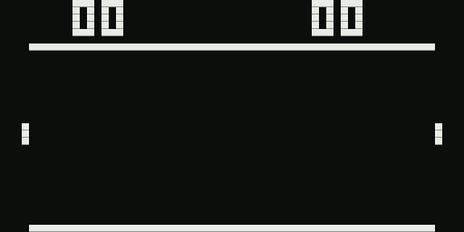
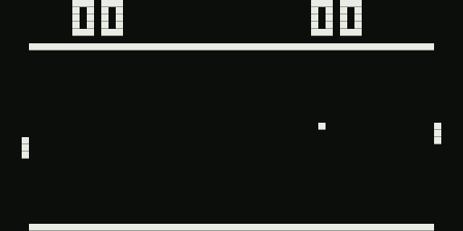
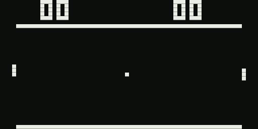

Ping-Pong
Martin Head · DREAMER no. 8 (1981-04) p. 21 1K RAM



Pong against the computer, played to 21 points. Difficulty can be changed through one byte in the program.
Keys
9 bat up, 1 bat down; any key serves.
Files
| File | Version | Load | Run |
|---|---|---|---|
| Ping-Pong.c8 | main | 0200-036F | C000 |
Listing as transcribed (with notes): ping_pong.txt
Source
DREAMER no. 8 on archive.org, p. 21 (PDF page 23). Author: Martin Head.
Corrections applied
- 0250 72EE -> 7201 and 025C 7201 -> 72FF (printed values moved the bat the wrong way and contradict the text; the scan has hand marks on exactly these words; not a published erratum).
Open doubts
None.